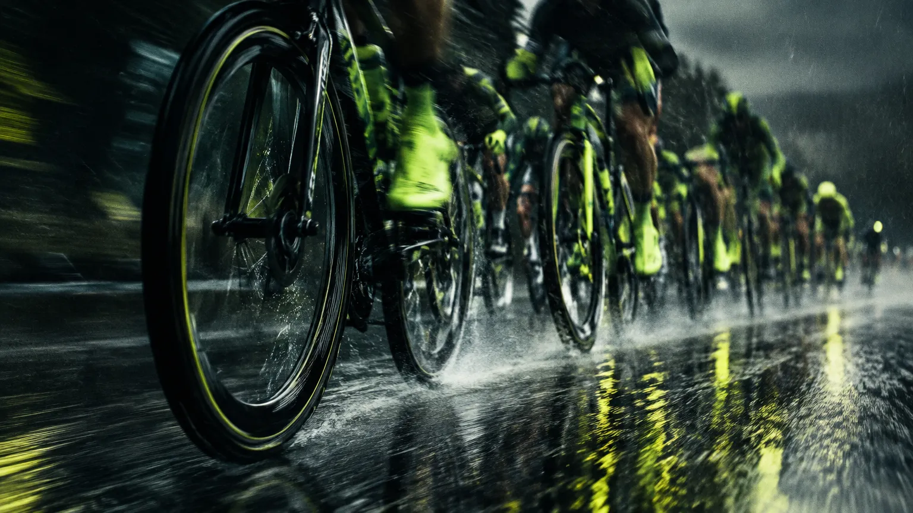
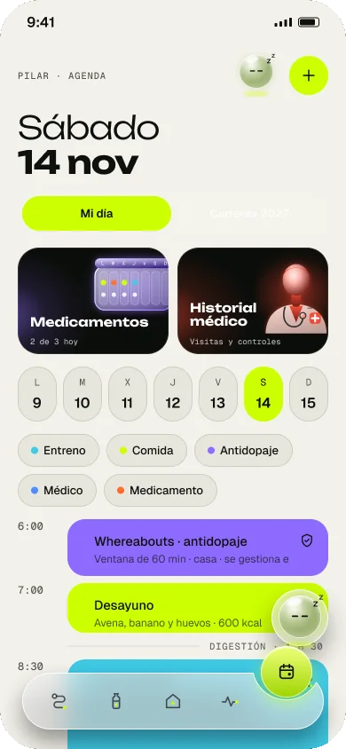

Manual de marca · v1.0 · noviembre 2026
Pelotón
encadenado.
Este manual reúne todas las decisiones visuales de PelotonSync y la razón de cada una: por qué tres círculos, por qué volt, por qué una mascota de vidrio, por qué dos temas. Está pensado para que cualquier persona que diseñe una pieza nueva llegue al mismo resultado.
01 · Esencia
El gregario
de los datos.
En el pelotón, el gregario trabaja para que su líder llegue fresco al final: le lleva agua, le corta el viento, lo cuida en la bajada. PelotonSync hace ese mismo trabajo con la información. Carga con lo administrativo para que el ciclista gaste su energía en rodar y recuperarse.
Propósito: que el ciclista profesional registre una vez y su equipo entero decida mejor.
Promesa: "Tu equipo, a rueda contigo." lema pendiente de aprobar

Personalidad
Habla como alguien del equipo, no como un sistema. Tutea, va al grano y nunca regaña.
Los números se muestran con su unidad y su fuente. Si un dato es estimado, se dice.
Todo lo diario cabe en 30 segundos. Si una tarea pide más, está mal diseñada.
Con la salud y la privacidad. Cada dato clínico lo ve solo quien debe verlo.
Así habla, así no
02 · Logo
Tres círculos,
cuatro lecturas.
- El atleta
La bola sólida volt va adelante. El ciclista es el centro y el usuario principal: por eso la bola siempre es volt y siempre va adelante.
- A rueda
Tres círculos en fila son el pelotón. En ciclismo, ir "a rueda" es ir detrás de otro para ahorrar energía: el equipo avanza unido detrás del ciclista.
- Cadena
Los aros entrelazados son eslabones de la cadena de la bici: preparador, nutricionista, médico y director conectados. Eso es el "Sync".
- Ciclo
Un aro no tiene principio ni fin: entrenar, registrar y recuperar, todos los días. Los tonos van de tenue a claro, como quien se acerca.
Pasa el mouse por cada lectura para ver qué parte del símbolo la cuenta.
Por qué no una bici
La primera ronda fue una bicicleta geométrica: se sintió genérica, igual a cientos de apps de ciclismo. Tres círculos dicen "ciclismo" (ruedas, pelotón, cadena) sin dibujar la bici, y funcionan a 16 px.
Por qué entrelazado
El cruce donde un aro pasa sobre el otro es lo que vuelve "eslabón" a dos círculos. Sin ese corte serían dos ruedas y se perdería la idea de equipo conectado.
Por qué la bola es más grande
Con radio 28 frente a 26 de los aros, el ojo la lee primero. Es la jerarquía del producto: primero el ciclista, después su equipo.
03 · Construcción
Medido
al milímetro.
Geometría · viewBox 4 24 136 72
| Pieza | Centro | Radio | Trazo | Color |
|---|---|---|---|---|
| Aro 1 | 40, 60 | 26 | 9 | #4F534E |
| Aro 2 | 72, 60 | 26 | 9 | #A9ADA6 |
| Bola | 104, 60 | 28 | corte 6 | #CCFF00 |
Los aros se separan 32 unidades: se superponen lo justo para entrelazarse. El aro 1 pasa por encima del aro 2 en el cruce superior. La bola lleva un corte de 6 px del color del fondo para despegarse del aro.
Área de protección
Alrededor del símbolo se deja libre, como mínimo, el radio de un aro (26 unidades) por cada lado. Ningún texto, borde ni imagen entra en esa zona.
Tamaño mínimo
Símbolo completo: 24 px de alto en pantalla u 8 mm impreso. Por debajo de 48 px se usa la versión mínima (un aro y la bola) y en notificaciones, solo la bola.
04 · Usos
Así sí,
así no.
Grega con el uniforme del equipo
Cuando Grega acompaña al ciclista en ruta, se viste como el equipo: jersey asfalto con la franja volt y el símbolo en el pecho, casco y bici del color del pilar donde aparece. Así el uniforme también es un sistema.
Jersey asfalto, franja y símbolo volt. Para la marca y el inicio.
Jersey #3FC8E4. Aparece en el pilar Mapa de rutas.
Jersey #FF6A2B. Aparece en Datos y en los resultados de carrera.
05 · Animación
El logo
también rueda.
El movimiento del logo comunica estados del sistema, una de las heurísticas básicas de usabilidad: el usuario siempre debe saber qué está pasando. F5
01 · 1,2 s
Inicio
Los aros entran uno a uno y la bola rebota. Es el splash al abrir la app: el equipo llega y el ciclista toma la punta. La intro de esta web es su versión larga.
02 · bucle 1,4 s
Sincronizando
Una ola volt recorre los aros y la bola late mientras se traen datos de Garmin, Strava o WHOOP. Reemplaza a la ruedita de carga genérica.
03 · 0,5 s
Sincronizado
Sale una onda desde la bola: todo quedó guardado. Si el usuario activó "Reducir movimiento", las tres se cambian por un fundido.
Del jersey a la notificación
Tres tonos con entrelazado
Jersey, sello o grabado
Un aro y la bola, 48 px o menos
Notificaciones y estado "en vivo"
Nueve rondas hasta llegar aquí
Cada ronda dejó un aprendizaje que sobrevive en el logo final.
R1
Bici geométricaGustó la tipografía gruesa; el símbolo se sintió genérico.
R2
Pulso y corazón rodanteEl corazón con ruedas se leía mal.
R3–R4
"oto" y cascoGustó el "oto", pero se perdía la bici.
R5
EslabónForma simple con significado: nace el entrelazado.
R6
RebufoLas bolas en fila gustaron mucho: nace el "a rueda".
R7–R8
Eslabón + bolasBolas perdidas o símbolo muy largo.
R9 · aprobado
Pelotón encadenadoEslabón + rebufo + atleta adelante.
06 · Mascota y agente IA
Grega,
tu gregario.
Grega nace de la bola volt del logo convertida en compañero: una esfera de vidrio líquido, translúcida, con borde de luz, ojos en píldora color asfalto y brazos y piernas de línea. Muévele el mouse: te sigue con la mirada. Haz clic: salta.
Los 8 estados del personaje · toca uno
Caricaturesco a propósito
Los rasgos humanos en apariencia y lenguaje aumentan la presencia social y la confianza en agentes de salud. Un agente hiperrealista puede caer en el "valle inquietante". F1
Vidrio, no peluche
Se probó una textura de peluche contra el vidrio líquido. Ganó el vidrio porque pertenece al mismo sistema visual de la barra de pilares y los botones: Grega es parte de la interfaz, no un adorno.
Sabe cuándo callarse
De noche entra en modo Recuperación: apagado y sin notificaciones. En Alerta deja de jugar y muestra primero "Llamar 123" y el aviso al médico. Grega no diagnostica.
Grega ciclista: emociones en ruta
Cuando Grega va en bici, sus emociones acompañan momentos concretos del ciclista. Aparecen en el prototipo, animadas, en las pantallas donde ese momento ocurre.
Check-in hecho o meta del día cumplida. Pantalla de Inicio.
Sprint, zona alta o récord de potencia. Pantalla de Rendimiento.
Top 10, podio o victoria. Pantalla de Resultado de carrera.
Carga alta o mal sueño: invita a descansar. Pantalla de Recuperación.
07 · Color
Asfalto, volt
y crema.
Tres colores de núcleo; los grises no son colores nuevos sino opacidades del texto (68 %, 52 % y 12 %). Así la paleta funciona igual en oscuro y en claro. Toca un color para copiar su código.
Asfalto
La carretera y la noche de recuperación. Un negro con una pizca de verde, para que el volt se sienta de la misma familia.
Volt
El atleta. Es el color de los chalecos y luces de alta visibilidad del ciclismo: se ve de lejos y significa "aquí estoy".
Crema
Texto sobre oscuro y fondo claro. Más cálido que el blanco puro, que cansa la vista en pantallas brillantes.
Volt profundo
El volt desaparece sobre fondo claro (contraste 1:1). Esta versión lo reemplaza en texto e íconos del modo claro.
Contraste comprobado
WCAG pide 4.5:1 para texto normal y 3:1 para texto grande. F4 Calculado con la fórmula de luminancia relativa de la W3C:
| Combinación | Contraste | Uso | WCAG AA |
|---|---|---|---|
| Volt sobre asfalto | 16.3:1 | Cifras, acciones | ✓ pasa |
| Crema sobre asfalto | 16.9:1 | Texto | ✓ pasa |
| Volt profundo sobre crema | 5.3:1 | Texto en modo claro | ✓ pasa |
| Ruta sobre asfalto | 9.6:1 | Aura y gráficas | ✓ pasa |
| Rendimiento sobre asfalto | 6.7:1 | Aura y gráficas | ✓ pasa |
| Agenda sobre asfalto | 5.2:1 | Aura y gráficas | ✓ pasa |
| Volt sobre crema | 1.0:1 | Nunca | ✕ prohibido |
Un aura por pilar
Un degradado desenfocado detrás de cada pantalla dice en qué pilar estás sin tener que leer. Es una señal de orientación periférica, útil cuando la atención está en otra cosa. Los rosados y magentas de los referentes se descartaron para no competir con el volt.
#3FC8E4 · agua y cielo
Ruta
#CCFF00 · el atleta
Registro
#FF6A2B · esfuerzo
Rendimiento
#8E6BFF · noche e IA
Agenda e IA
Zonas de intensidad
Se usa la convención de color de Garmin, la que el ciclista ya ve en su reloj, para que no tenga que aprender otra. P2 Pasa el mouse para ampliar cada zona.
08 · Tipografía
Ligera y negrita
en el mismo título.
Cuatro familias, cada una con un solo trabajo. Todas tienen licencia abierta (OFL), así que se pueden usar en la app, la web y el material impreso sin costo. P6
títulos y logotipoComer para rodar
16–17 px cuerpoPlan de Chiara B., nutricionista · día de fondo · 2.950 kcal
una por pantalla+6 TSB · 312 W
ejes, horas, unidadesPilar · Datos · 6:00 · Z4
La regla del título
Una parte en Light y la que importa en Bold: "Hola, Sergio", "Comer para rodar". El ojo salta directo a la palabra que cuenta.
La regla de Doto
La letra de puntos LED recuerda a los marcadores de meta y a los ciclocomputadores. Solo para la cifra protagonista de cada pantalla y nunca para texto corrido, porque con brillo bajo cuesta leerla.
09 · Temas y vidrio
Noche para recuperar,
día para rodar.
Oscuro · Recuperación para la noche y el descanso. Claro · Ruta para el día en la calle, porque la polaridad clara se lee mejor con luz brillante. F3 El tema cambia solo con la luz del ambiente y también se puede cambiar a mano, como en esta web.
El vidrio se reserva para lo que flota: la barra de pilares, los botones flotantes y la barra de estado. El texto largo va siempre sobre superficie sólida. Si el usuario activa "Reducir transparencia", todo vidrio pasa a sólido y el texto mantiene 4.5:1. F4
Vidrio de cromo
Relleno translúcido + desenfoque de 24–28 px + brillo interior de 1 px.
Tarjeta con luz
Base oscura + luz radial del color del pilar + borde blanco al 10 %.


10 · Iconos Eslabón
41 iconos
con firma propia.
Rejilla de 24, trazo de 1.75 y puntas redondas. Su firma es un punto relleno en el color del pilar: la bola del logo escondida en cada icono. El icono "equipo" son los dos aros entrelazados. Lucide (ISC), Tabler y Phosphor (MIT) quedan como respaldo con licencia comercial. P7
11 · Ilustración
Figuras con luz propia.
Ciclistas, staff y objetos con grano, degradado oliva y un halo del color de su pilar. No llevan cara: así cualquier ciclista se puede ver en ellas, y la app no depende de fotos con derechos de imagen.
12 · Aplicaciones
Fuera
de la pantalla.
Jersey de staff · una tinta + volt
Bidón · una tinta sobre volt
¿Cómo amaneces? Check-in de 30 s
Te toca la pastilla de las 9
Vio tu check-in · 7:40
Notificaciones · nivel punto
13 · Mockups
La app
en el bolsillo.
Pantallas del prototipo de alta fidelidad: ciclista, equipo técnico y médico. Cambia el tema para verlas en claro. Desliza hacia el lado.
Fuentes de esta página
- Li, X., Luximon, Y., & Zhang, J. (2023). Rasgos antropomórficos y confianza en agentes conversacionales de salud. Journal of Medical Internet Research, 25, e44479. doi:10.2196/44479
- Garmin. Heart Rate Color Zones (manual de Forerunner 225). support.garmin.com
- Nielsen Norman Group. Dark Mode vs. Light Mode: Which Is Better? nngroup.com
- W3C. Web Content Accessibility Guidelines (WCAG) 2.2, criterio 1.4.3 Contraste mínimo y definición de luminancia relativa. w3.org · Nielsen Norman Group. Glassmorphism. nngroup.com · Axess Lab. Glassmorphism Meets Accessibility. axesslab.com
- Nielsen, J. (1994, act. 2024). 10 Usability Heuristics for User Interface Design: visibilidad del estado del sistema. nngroup.com
- Unbounded y Doto en Google Fonts (SIL Open Font License); Geist y Geist Mono de Vercel (OFL).
- Licencias: Lucide (ISC), Tabler (MIT), Phosphor (MIT).
- Logo, Grega, colores, ilustraciones, pantallas y aplicaciones: bitácora de identidad visual del proyecto (rondas 1–9, aprobado el 13 nov 2026). Contrastes calculados con la fórmula de la W3C. Fotografías de ambiente generadas para el proyecto, sin personas identificables. B